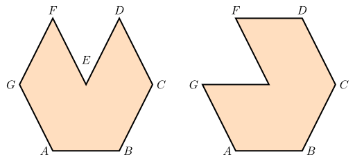
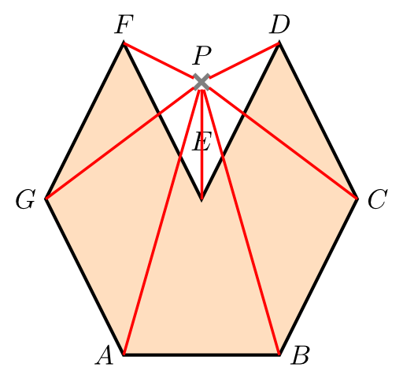

Suppose you have a polygon with \(n\) sides. This is called an \(n\)-gon.
Basics about polygons
An \(n\)-gon can be defined by a list of \(n\) points.
Note that the order is important:
{kind=link}

I will not consider self-intersecting polygons for the following statements. I'm aware of them, but whenever you have a self-intersecting polygon you can create multiple polygons that cover the same area and don't intersect each other (some pairs might have a finite number of points in common, but not an infinite number).
Is a point in a triangle / a rectangle
It is quite easy to check whether a point is inside of a triangle or inside of a rectangle. I have already written an article about how to check if a point is inside of a rectangle.
Is a point inside of an n-gon?
Let \(P\) be a point and \(N = [P_1, P_2, \dots, P_n]\) be an \(n\)-gon. It is now much more difficult to check if \(P\) is inside of \(N\). The area-approach works for convex \(n\)-gons, but that's it.
Count Crossing Line Segments
However, you can try another approach which I have visualized in the following image:
{kind=link}

When \(P\) is inside of \(N\), every line \(P_{1}P, P_{2}P, \dots, P_{n}P\) will cross the polygon lines \(P_{1}P_2,P_{2}P_3, \dots, P_{n}P_1\) an even number of times. If P is outside, at least one of the lines \(P_{i}P\) will cross a polygon line \(P_{j}P_{j+1}\) once.
This means, for every check you have to check \(n^2\) pairs of line segments for crossings. How you can do that is explained in my article How to check if two line segments intersect.
This algorithm is in \(\mathcal{O}(n^2)\) time complexity (it does need a constant amount of additional space).
Triangularization
When you have a lot of queries, you might want to divide your polygon into convex polygons. The easiest way to do this might be dividing \(N\) into triangles.
That way, you can check for every triangle if \(P\) is inside of it. I assume that the number of triangles is not bigger than \(n\). As the check is in constant time for one triangle, you would have an algorithm that needs \(\mathcal{O}(n)\) time and space for its checks (+ some preprocessing which is done only once).